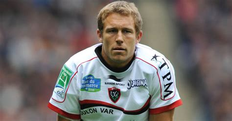

About Jonny
Jonny Wilkinson is one of the greatest Rugby players of all time. Who won almost everything there was to win in Northern Hempishere Club Rugby and the World Cup.
Jonny playing for Toulon
Wilkinson's Characteristics
- Kicking
- Aggressive Defender
- He's a World Cup Hero
Jonnys Best Moments
Jonny had many moments throughout his career to be proud of notably World Cup win in 2003 and all European trophies with Toulon especially games vs Saracens. See below for more about them